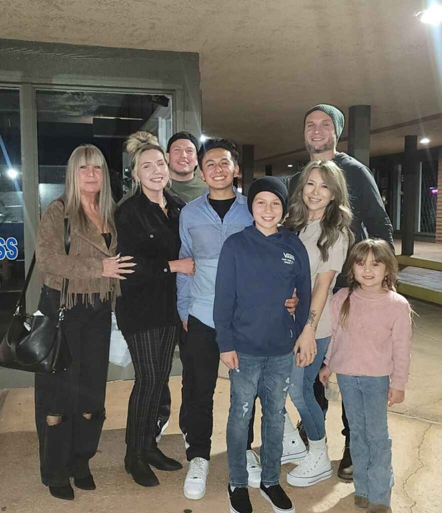
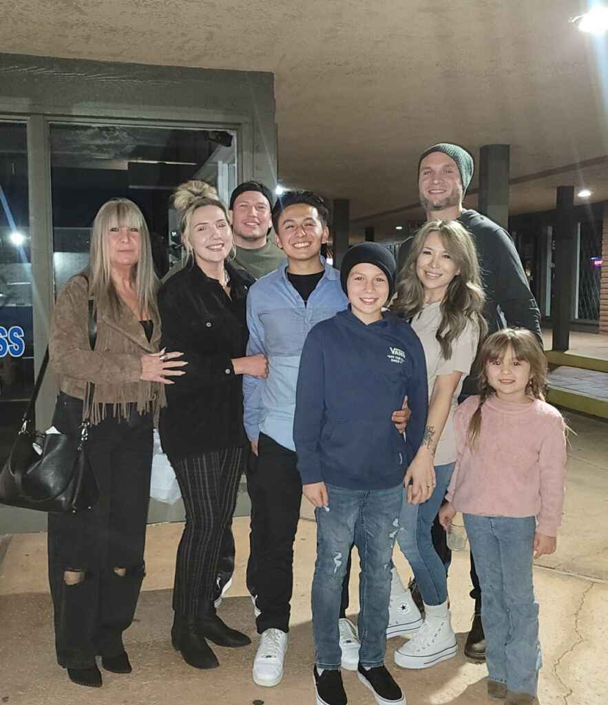
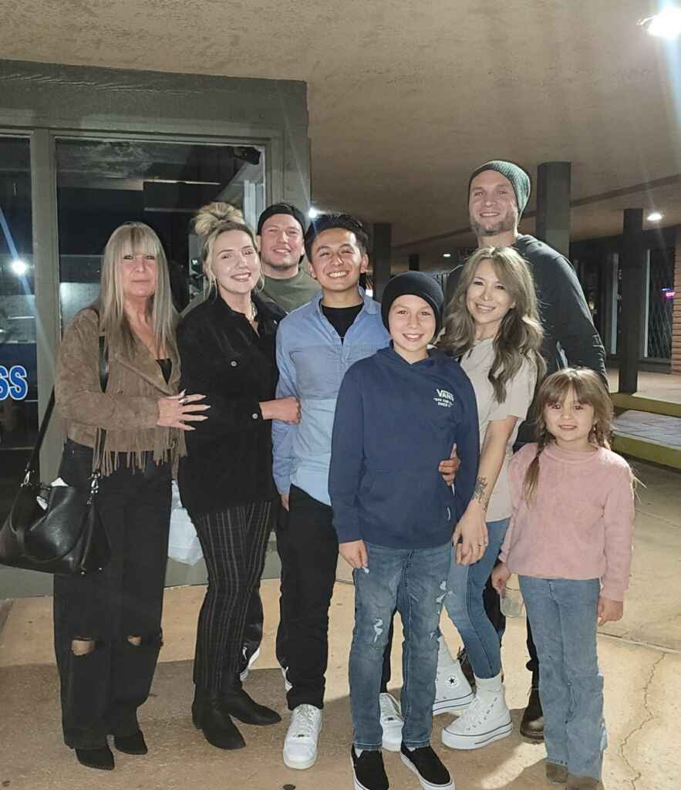
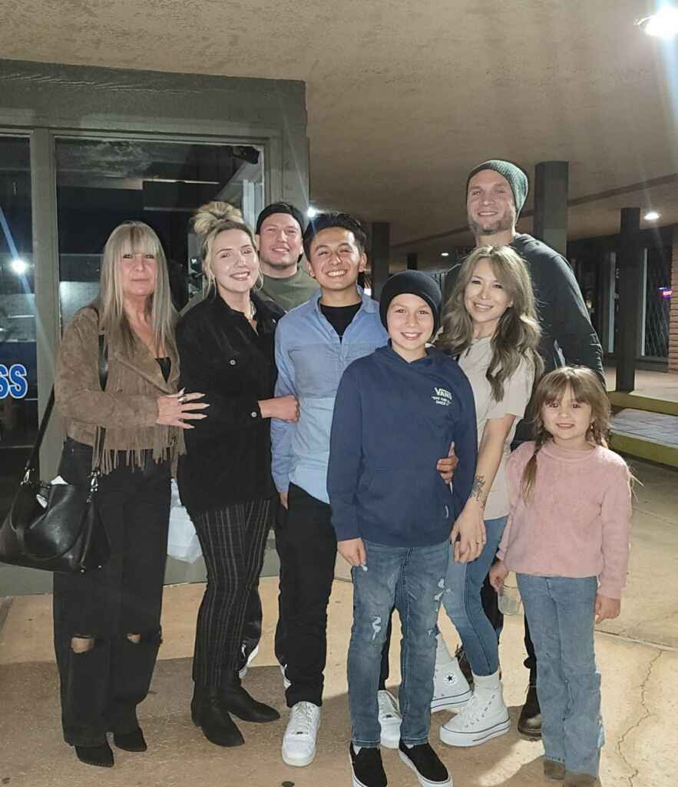

 

Archy Ivan Marshall (born 24 August 1994),[1] also known by his stage name King Krule, among other names, is an English singer, songwriter, musician, rapper and record producer. He began recording music in 2010 under the moniker Zoo Kid. The following year he adopted his present name. He has released several EPs and his debut full-length album, 6 Feet Beneath the Moon, was released in 2013 to positive critical reception.[2] His third album, The Ooz, was released on 13 October 2017[3] and his fourth album, Man Alive!, was released on 21 February 2020[4] both to further critical acclaim. His music blends elements of punk jazz with hip hop, darkwave, trip hop and post-punk. He currently resides in Liverpool.
Vincent Jamal Staples (born July 2, 1993) is an American rapper and singer. Staples was once a close associate of Odd Future, Mike G and Earl Sweatshirt in particular. He is currently signed to Motown and Blacksmith Records. Staples rose to prominence with appearances on albums by Odd Future members and his collaborative mixtape titled Stolen Youth with producer Mac Miller. In October 2014, he released his debut EP Hell Can Wait, which included the singles "Hands Up" and "Blue Suede". His debut album, Summertime '06, was released in June 2015 to critical acclaim. He was also featured as a part of the XXL 2015 Freshman Class.[3] His second album Big Fish Theory, which contains the singles "BagBak", "Big Fish" and "Rain Come Down", incorporates avant-garde, dance and electronic influences. It was released in June 2017 to further acclaim from critics. In November 2018, Staples released his third studio album, FM! In July 2021, he released his self-titled fourth studio album, and Ramona Park Broke My Heart in April 2022.
The Strokes are an American rock band from New York City. Formed in 1998, the band is composed of lead singer and songwriter Julian Casablancas, guitarists Nick Valensi and Albert Hammond Jr., bassist Nikolai Fraiture, and drummer Fabrizio Moretti. They were a leading group of the early-2000s indie rock revival. The release of their EP The Modern Age in early 2001 sparked a bidding war among major labels, with the band eventually signing to RCA Records. That summer, they released their debut album, Is This It, to critical acclaim and strong sales. It has since appeared on numerous "best album" lists. It was followed by Room on Fire (2003) and First Impressions of Earth (2005), both of which sold well but failed to match Is This It in critical success.